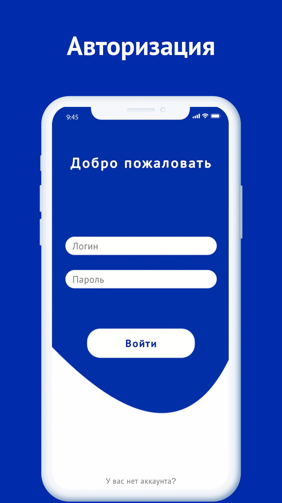
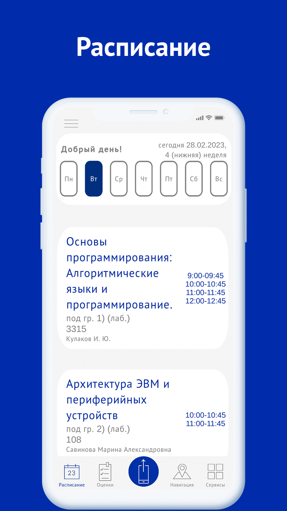
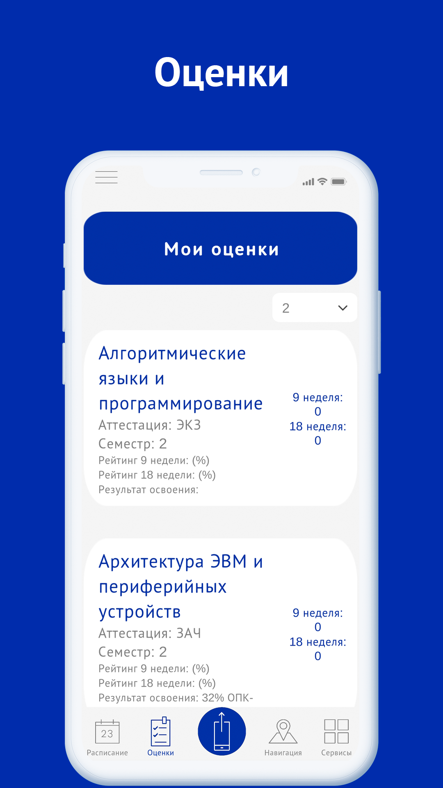
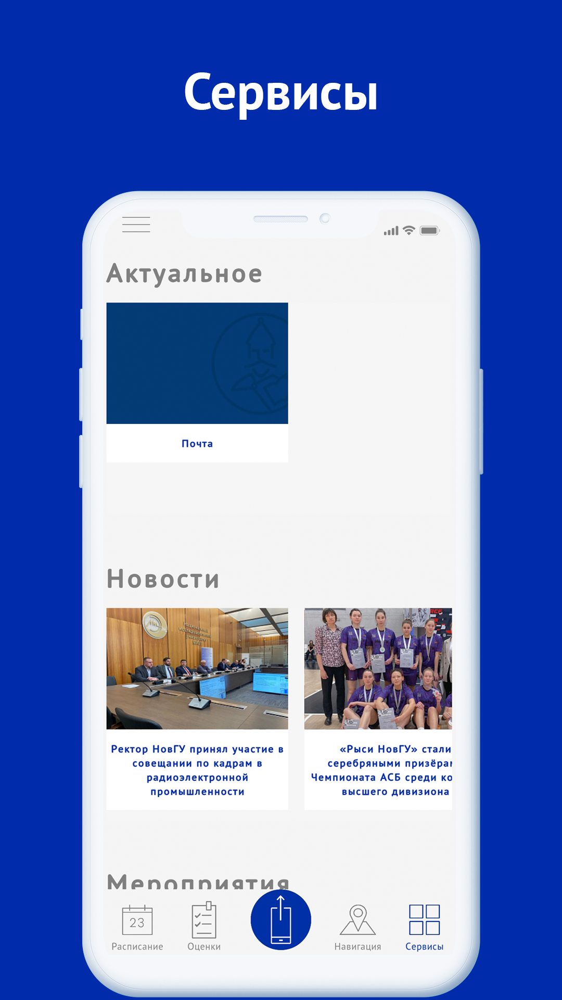
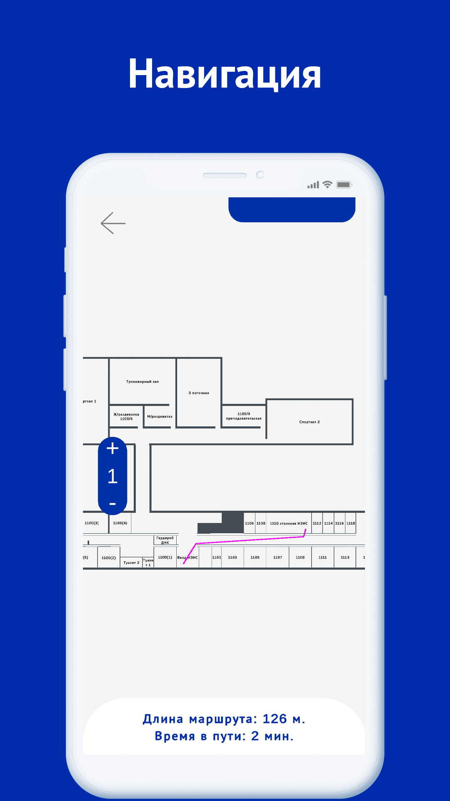

Мобильное приложение ЯжеРЫБАК
О приложении
Мобильное приложение ЯжеРЫБАК — это захватывающий симулятор рыбалки, созданный для тех, кто любит природу, тишину и азарт охоты на трофейную рыбу. Отправляйся на живописные водоёмы, осваивай снасти, открывай новые виды рыб и прокачивай свои навыки.
FAQ/Ответы на частозадаваемые вопросы
    Что это за приложение?
Мобильное приложение ЯжеРЫБАК — это атмосферный симулятор рыбалки, в котором вас ждёт реалистичный геймплей, разнообразие снастей, живописные локации и более 50 видов рыб. Игра разработана как расслабляющее и увлекательное приключение, подходящее для игроков всех возрастов. Мы постоянно работаем над обновлениями: в ближайших версиях появятся новые водоёмы, задания, система достижений и ежедневные соревнования.
Кого мы приглашаем к тестированию?
Мы приглашаем всех желающих — как опытных рыбаков, так и новичков. Нам важна обратная связь от пользователей любых возрастов и предпочтений. Если вы увлекаетесь рыбалкой, любите симуляторы или просто хотите отдохнуть в спокойной игре — это приложение для вас.
У меня не получается установить приложение или возникают ошибки — что делать?
Если вы столкнулись с проблемами при установке или какие-либо функции работают некорректно — пожалуйста, напишите нам на почту, указанную в контактах разработчика. Желательно приложить скриншоты и описание ошибки — мы постараемся оперативно всё исправить.
Хочу оставить отзыв или предложить улучшение — куда писать?
Если вы протестировали игру и хотите поделиться мнением или идеями, напишите нам по указанным контактам, Ваши предложения помогут нам сделать игру ещё лучше!
Как удалить аккаунт?
Если вы хотите удалить свой аккаунт и все связанные с ним данные, пожалуйста, обратитесь на контактную почту, указанную в профиле разработчика. Мы обработаем ваш запрос в кратчайшие сроки.
Свяжитесь с нами
- https://vk.com/yazherybak
Наша группа в ВКонтакте - sergeo.sss@yandex.ru
Почта разработчика